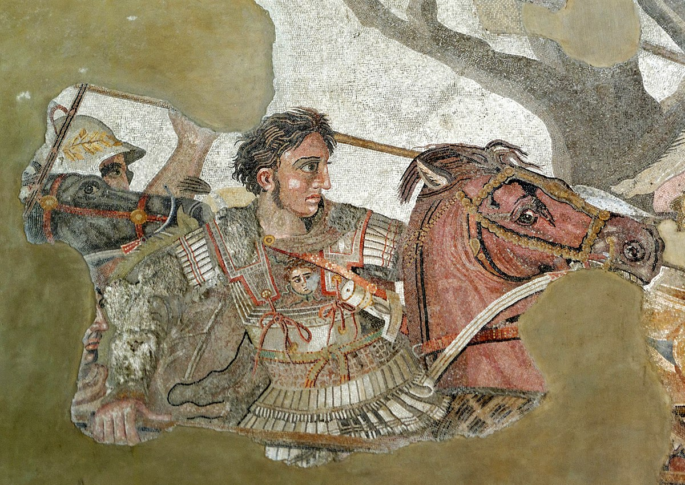

Figuras militares históricas da comunidade LGBTQIA+
1. Alexandre, O Grande Um dos comandantes militares mais bem-sucedidos da história, Alexandre seria visto hoje como bissexual. Os registros do historiador Diodoro Sículo e do estrategista grego Eliano sustentam que, além de quatro mulheres, o guerreiro também teve um amante, Heféstion, seu braço direito no exército. A relação dos dois era tão intensa que, quando Heféstion morreu, Alexandre ficou devastado, sem comer nem beber por dias e decretou luto em todo seu reino.
2. Leonard Matlovich Veterano da Guerra do Vietnã, instrutor de relações raciais e condecorado duas vezes por seus atos de bravura e méritos, Matlovich foi também o primeiro militar gay em serviço ativo a declarar sua orientação sexual. Sua atitude, nos anos 1970, contribuiu para combater o veto à presença de homossexuais nas Forças Armadas dos Estados Unidos e, por essa razão, tornou-se um símbolo para milhares de defensores da causa LGBT, dentro e fora dos batalhões.
3. Júlio César Até hoje o imperador e líder militar romano é lembrado por seu envolvimento com Cleópatra, a rainha do Egito. Porém, no livro do século 2, As Vidas dos Doze Césares, o historiador e escritor Suetônio relata que Júlio César, aos 19 anos, teve um relacionamento com o rei Nicomedes 4º, da Bitínia. Na época, os rumores eram de que César era o parceiro passivo da relação. Para a sociedade romana, o sexo gay em si não era problema, mas a submissão de um líder, sim. Motivo pelo qual, anos mais tarde, seus adversários políticos o caçoavam como “Rainha da Bitínia”.
4. Ernst Röhm O temido capitão do exército nazista e amigo de Adolf Hitler era um gay assumido que defendia que somente os homossexuais hipermasculizados, isto é, em sua visão, sem empatia pelo sexo feminino ou traços relacionados a ele, é que tinham coragem de exercer atos de violência extrema que outros homens não eram capazes. Porém, quando Hitler percebeu que a maioria dentro de seu partido era contrária à homossexualidade, permitiu que Röhm fosse executado.
5. Harvey Milk Poucos sabem, mas Milk, que era ativista em prol dos direitos LGBT e o primeiro gay assumido a vencer uma eleição nos Estados Unidos, teve antes uma carreira militar. Ele ingressou na marinha americana durante a Guerra da Coreia, onde serviu como oficial mergulhador a bordo de um navio de salvamento de submarinos. Mais tarde, transferido para uma base naval da Califórnia, atuou como instrutor de mergulho e, em 1955, foi dispensado do posto de tenente.